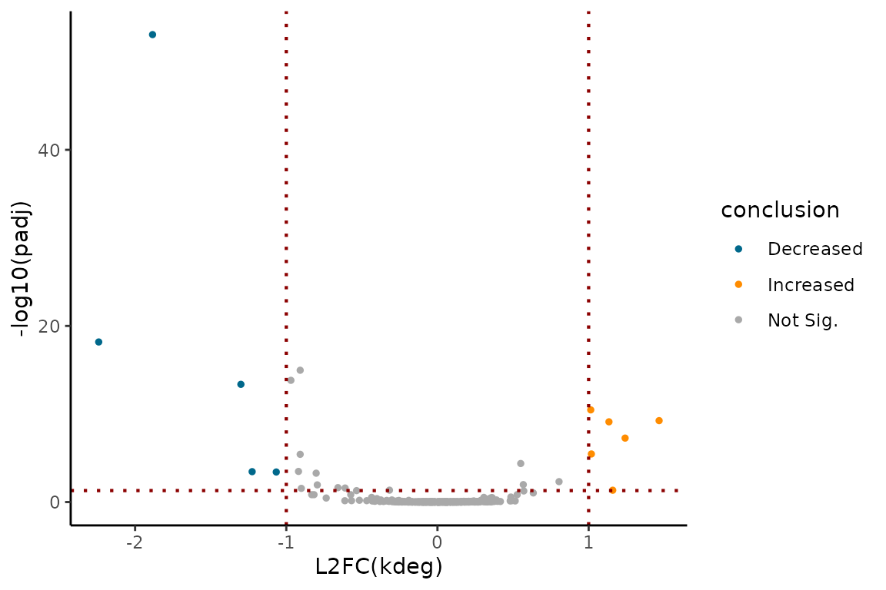

EZbakR for people in a hurry
Quickstart.RmdAbstract
EZbakR is a one-stop-shop for analyses of nucleotide recoding RNA-seq datasets (NR-seq). NR-seq refers to a class of methods (e.g., TimeLapse-seq, SLAM-seq, TUC-seq, etc.) that combine RNA-seq, metabolic labeling, and unique metabolic label recoding chemistries. These methods were originally developed to dissect the kinetics of RNA synthesis and degradation. Excitingly though, a treasure trove of extensions of the original methods have been created over the years. To-date, nucleotide recoding has been combined with TT-seq, Start-seq, Ribo-seq, scRNA-seq, Perturb-seq, and subcellular fractionation, just to name a few such extensions. In addition, while the original methods used 4-thiouridine (s4U), the same chemistry has been found to work with 6-thioguanosine (s6G), opening the door to dual-labeling experimental designs (e.g., TILAC). EZbakR was designed to facilitate anlayses of the full gamut of NR-seq methods. While not all analyses implemented in EZbakR can be applied to all variants of NR-seq, EZbakR’s modular design means that it has something for everyone. In this vignette, we will quickly highlight the main modules of EZbakR. For simplicity, we will be focusing on how to perform a standard, single-label NR-seq analysis. Other vignettes go into greater detail about each module and the broad array of analyses that can be performed by each.
Necessary Setup
You will need to install and load EZbakR. Instructions to do so can be found at this link. Setting the seed will also ensure exact reproducibility of analyses of simulated data shown in this vignette. Finally, I will use a little bit of dplyr to showcase some key results:
library(EZbakR)
library(dplyr)
#>
#> Attaching package: 'dplyr'
#> The following objects are masked from 'package:stats':
#>
#> filter, lag
#> The following objects are masked from 'package:base':
#>
#> intersect, setdiff, setequal, union
set.seed(42)Step 0: Create an EZbakRData Object
To use EZbakR, you will need to create an EZbakRData
object. An EZbakRData object consists of two components: a
cB data frame and a metadf data frame. cB stands for “counts binomial”
and contains all of the information about mutations seen in sequencing
reads in each sample sequenced. metadf stands for “metadata data frame”
and contains information about the experimental details of each sample
(i.e., how long the metabolic label feed was). Examples of what these
data structures look like are lazily loaded when you load
EZbakR. This means that you can call them as if you created
them yourselves, with example_cB and
example_metadf:
# Check out examples:
example_cB
example_metadfA cB data frame consists of rows corresponding to groups of reads with identical data, where data corresponds to the:
- Sample of origin. This should be noted in the sample column of the cB.
- Mutational content. This should be noted by one or more columns of
the form
(e.g., TC in example_cB). The value in these columns should correspond to the observed number of mutations. - Mutable nucleotide content. This should be noted by one or more
columns of the form n
(e.g., nT in example_cB). The value in these columns should correspond to the number of mutable bases overlapped by the read. - Genomic features the read was assigned to. In EZbakR, these can be
named anything. The fastq2EZbakR pipeline most commonly paired with
EZbakR can include feature columns such as those which show up in
example_cB:- GF: Stands for “gene feature” and represents the gene (exonic or intronic regions) the read overlapped
- XF: Stands for “exonic feature” and represents the gene (exonic regions only) the read overlapped
- rname: Chromosome the read came from.
The final column of the cB data frame is n, the number of reads with identical data for the other columns. cB data frames are most easily obtained from the Snakemake pipeline fastq2EZbakR, available here.
A metadf table has the following required columns:
- sample: Sample name, as it shows up in the cB table.
- Metabolic label time information. If you have a single label, this
should be documented in a column called tl. If you used
multiple labels, then the different label times should be noted in a
column called tl_
, where denotes the type of mutation that conversion of the label yields. For example, if you are using s4U (conversion yields T-to-C mutations) and s6G (conversion yields G-to-A mutations), then your metadf should include columns tl_TC and tl_GA.
The remaining columns can be named anything you want and should describe aspects of each experiment. NOTE: these are currently exclusively interpreted as discrete factors. Things like time-series modeling is not currently supported, but may be in future releases. These factors will be used when deciding how to group samples when averaging replicate data and performing comparative analyses. More on this later!
Once you have a cB and metadf table, you can create an EZbakRData object:
ezbdo <- EZbakRData(example_cB, example_metadf)Now, let’s generate some simulated data to be used in the remaining steps:
# Simulate 500 "genes" worth of data
# Simulates 2 replicates of 2 different experimental conditions
simdata <- EZSimulate(nfeatures = 500, nreps = 2)
ezbdo <- EZbakRData(simdata$cB, simdata$metadf)Step 1: EstimateFractions()
The first step of any NR-seq analysis is to figure out what fraction
of your reads come from each expected mutational population. For
example, in a standard s4U labeling NR-seq experiment, you
will have reads from a high T-to-C mutation population and reads from a
low T-to-C mutation population. Technically, this involves two steps: 1)
estimating mutation rates of the two populations in each labeled sample
and 2) estimating fractions. Both of these steps are performed with a
single function in EZbakR: EZbakRFractions():
ezbdo <- EstimateFractions(ezbdo)
#> Estimating mutation rates
#> Summarizing data for feature(s) of interest
#> Averaging out the nucleotide counts for improved efficiency
#> Estimating fractions
#> Processing outputSee ?EstimateFractions() for details and descriptions of
optional parameters. We can use the simulated ground truth to assess
estimate accuracy and confirm that the method is working:
# Simulated ground truth
truth <- simdata$PerRepTruth
# Get fraction estimates.
# Can also access with ezbdo$fractions[[1]] or ezbdo$fractions$feature
est <- EZget(ezbdo, type = 'fractions')
# Combine
compare <- dplyr::inner_join(est, truth, by = c('sample', 'feature'))
# Assess accuracy
plot(compare$true_fraction_highTC, compare$fraction_highTC)
abline(0,1)
Looks good!
Step 2: EstimateKinetics()
The next step of a standard NR-seq analysis is to use the estimates
of mutational population proportions (and possibly normalized read
counts) to estimate kinetic parameters of interest (e.g., degradation
and synthesis rate constants). The simplest and quickest way to do this
is with EstimateKinetics():
ezbdo <- EstimateKinetics(ezbdo)By default, this uses a standard, steady-state, single rate constant
model of RNA metabolism to infer a degradation rate constant
(kdeg) and synthesis rate constant (ksyn) for
each gene. Other analysis strategies implemented in
EstimateKinetics() include those more appropriate for
non-steady-state systems or short label times. The strategy
argument in EstimateKinetics() sets which analysis strategy
is used. See ?EstimateKinetics for details.
Again, let’s compare to ground_truth:
# Simulated ground truth
truth <- simdata$PerRepTruth
# Get fraction estimates.
# Can also access with ezbdo$fractions[[1]] or ezbdo$fractions$feature
est <- EZget(ezbdo, type = 'kinetics')
# Combine
compare <- dplyr::inner_join(est, truth, by = c('sample', 'feature'))
# Assess accuracy
plot(log(compare$true_kdeg), compare$log_kdeg)
abline(0,1)
Great!
Step 3: AverageAndRegularize()
Typically, you will have multiple replicates of each experimental
condition. In that case, the next step is to average the data across
these replicates and estimate overall uncertainties. This can then be
passed along to downstream comparative analyses to see which features
have differences in their kinetic parameters between different
experimental conditions. This averaging process is done with
AverageAndRegularize():
ezbdo <- AverageAndRegularize(ezbdo,
parameter = "log_kdeg")
#> Fitting linear model
#> Estimating coverage vs. variance trend
#> Regularizing variance estimatesSee ?AverageAndRegularize() for details. One cool thing
about AverageAndRegularize() is that it implements a
heteroskedastic linear model and can thus be passed formula objects to
detail how you would like to stratify samples, and whether or not there
are any batches you would like to regress out of the main parameter
effects. See the relevant vignette for more details.
Finally, setting parameter = "log_kdeg" was not
technically necessary as it is the default, but it showcases that you
need to specify which kinetic parameter you want to average across
replicates. If you run this again with a different parameter, a new
table will be added to the ezbdo$averages list:
ezbdo <- AverageAndRegularize(ezbdo,
parameter = "log_ksyn")
#> Fitting linear model
#> Estimating coverage vs. variance trend
#> Regularizing variance estimatesLet’s make sure the estimates are still accurate:
truth <- simdata$AvgTruth
est <- EZget(ezbdo, type = 'averages', parameter = 'log_kdeg')
compare <- dplyr::inner_join(truth, est, by = 'feature')
plot(compare$true_logkdeg_treatmenttreatment1,
compare$mean_treatmenttreatment1)
abline(0,1)All good!
Step 4: CompareParameters()
Once you have replicate averaged parameter estimates, you can compare
them and assess the “statistical significance” of any observed
differences. This is done with CompareParameters():
ezbdo <- CompareParameters(ezbdo,
condition = 'treatment',
reference = 'treatment1',
experimental = 'treatment2',
parameter = "log_kdeg")In addition to providing the EZbakRData object output by
AverageAndRegularize(), you also need to specify three
other arguments:
-
condition: the metadf column (or function of columns) that replicates were stratified by. The simulated metadf has a single experimental detail column calledtreatment, so this is the condition here. -
reference: what value ofconditiondo you want to consider the “reference” level. -
experimental: what value ofconditiondo you want to consider the “experimental” level.
Once again, parameter’s default value is “log_kdeg”, but
is specified here to be explicit.CompareParameters() will
calculate the difference in average parameter as:
experimental - reference.
EZbakR provides some convenient visualization functions to inspect
the output of CompareParameters().
Volcano plot:
EZVolcanoPlot(ezbdo, parameter = "log_kdeg",
condition = 'treatment',
reference = 'treatment1',
experimental = 'treatment2')
MA plot:
EZMAPlot(ezbdo, parameter = "log_kdeg",
condition = 'treatment',
reference = 'treatment1',
experimental = 'treatment2')